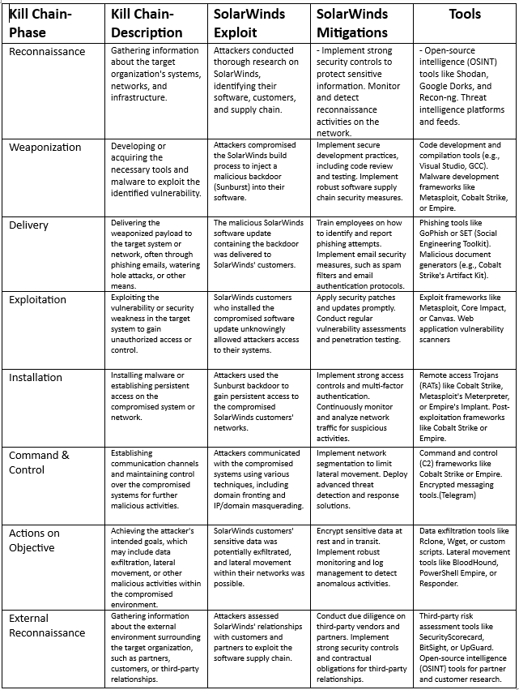

and press Enter.
You will see that the Problem loading page tab appears that says Secure Connection Failed.
Go back to the Terminal window; you will see INTRUSION ATTEMPT DETECTED.Press Ctrl+C to stop.
Close all windows.
Activity 3 - DDOS ATTACK
A Distributed Denial of Service (DDoS) attack is a malicious attempt to disrupt the normal functioning of a network,
service, or website by overwhelming it with a flood of incoming traffic or requests.
In a DDoS attack, the attacker typically harnesses a large number of compromised computers or devices
(often forming a botnet) to simultaneously send a high volume of traffic to the target,
rendering it unable to handle legitimate requests.

Protecting against DDoS attacks requires proactive planning, network resilience,
and the ability to respond effectively when an attack occurs.
Organizations often work with their internet service providers (ISPs) and
DDoS mitigation specialists to implement appropriate defense mechanisms and strategies to mitigate the impact of DDoS attacks.
What type of programs or software can we use for protection?
1-DDoS Protection Services
2-Firewalls
3-Intrusion Detection and Prevention Systems (IDS/IPS)
4-Content Delivery Networks (CDNs)
5-Load Balancers
6-Anti-DDoS Routers
7-Traffic Monitoring and Analysis Tools
How to perform SYN flooding Attack with Metasploit?
CP SYN flood is a type of Denial of Service (DDoS) attack that
exploits part of the normal TCP three-way handshake to consume
resources on the targeted server and render it unresponsive.
How to perform SYS Flood with Metasploit
First, select your target’s IP address. I am
taking testphp.vulnweb.com as a victim. So you know how to get
an IP address from a domain name. Simple doping and that will give to domain IP address.
So now I know the victim’s IP Address 18.192.182.30.
Launching Metasploit by typing msfconsole in your kali terminal
Then use the select the auxiliary “auxiliary/dos/TCP/synflood” by
typing the following command.
Msf6 > use auxiliary/dos/tcp/synflood
Msf6> show options
Now you can see you have all the available options that you can set.
To set an option just you have to typeset and the option name and
option.
You have to set two main option
RHOST= target IP Address
RPORT=target PORT Address
Set RPORT 18.192.182.30
Set RPORT 80
To launch the attack just type.
exploit
to see the packets you can open Wireshark.
Reference:
Yadav, S. (no date) How to perform syn flooding attack with Metasploit, LinkedIn.
Available at:
https://www.linkedin.com/pulse/how-perform-syn-flooding-attack-metasploitshubham-yadav (Accessed: March 22, 2023).
Activity 4 - Digitalisation
What is digitalization?
Digitalization is the process of incorporating digital technologies into various aspects of life and business to transform analog processes into digital formats,
improving efficiency, connectivity, and access to information.
What are the security implications of the digital economy?
The digital economy has revolutionized the way we conduct business and interact with technology.
While it offers numerous advantages, it also introduces several security implications that need to be considered.
Some key security implications of the digital economy:
1-Cyberattacks
2-Data Privacy
3-Identity Theft and Fraud
4-Internet of Things (IoT) Security
5-Cloud Security
What is a 'fully digital enterprise' ?
By embracing digital transformation, organizations can unlock new opportunities,
increase competitiveness, and better meet the changing needs of customers in the digital age.
What are the cyber Security challenges/concerns with a fully digital enterprise?
One of the primary cyber security challenges with a fully digital enterprise is the increased risk of data breaches and unauthorized access.
The organization becomes a target for cybercriminals seeking to exploit vulnerabilities in interconnected systems and gain unauthorized access
to sensitive data. Data breaches can result in financial losses, reputational damage, legal liabilities, and loss of customer trust.
Preventive measures, such as implementing robust security protocols, access controls, and encryption, as well as conducting regular security assessments
and employee training, are essential to mitigate this risk.
What are the cyber security challenges for a bricks and mortar SME wanting to become a digital enterprise?
A common cyber security challenge for a bricks and mortar SME transitioning into a digital enterprise is the lack of expertise and resources dedicated to cybersecurity.
SMEs may not have the knowledge or financial capacity to effectively address potential cyber threats
and vulnerabilities. This makes them more vulnerable to attacks and data breaches.
To mitigate this challenge, SMEs should consider seeking external assistance, such as partnering with managed
security service providers or cybersecurity consultants, to strengthen their security posture and ensure adequate protection of their digital assets.
Do you agree with the views expressed, especially in light of the 'energy crisis' experienced worldwide in 2022
I think that the biggest reason for the energy crisis in 2022 is the war between Ukraine and Russia. With the start of the war, other countries in the world started to take sides.
In this case, certain economic embargoes were brought along.
Russia restricted gas sales for a certain period of time.
In this case, it greatly affected European countries that bought 43 percent of their gas from Russia.
Resource:
Refinitiv Eikon, Datastream (Retrieved October 4, 2022)
Business Ghana, “Bank of Ghana launches Cyber Security
Directive for Financial Institutions,” (25 October 2018)
https://www.iea.org/topics/global-energy-crisis
Activity 5 - OWASP Top 10 and IEEE Top 10
What is the Open Web Application Security Project (OWASP)?
The Open Web Application Security Project (OWASP) is a nonprofit foundation that provides guidance on how to develop,
purchase and maintain trustworthy and secure software applications. OWASP is noted for its popular Top 10 list of web application security vulnerabilities.
Here is a OWASP Top 10 List:
A01:2021 Broken access control.
A02:2021 Cryptographic failures
A03:2021 Injection.
A04:2021 Insecure design.
A05:2021 Security misconfiguration.
A06:2021 Vulnerable and outdated components.
A07:2021 Identification and authentication failures.
A08:2021 Software and data integrity failures.
A09:2021 Security logging and monitoring failures.
A10:2021 Server-side request forgery.
IEEE Top 10 List:
1-Injection Attacks
2-Cross-Site Scripting (XSS)
3-Cross-Site Request Forgery (CSRF)
4-Server-Side Request Forgery (SSRF)
5-Security Misconfigurations
6-Insecure Direct Object References (IDOR)
7-Unvalidated Input
8-Broken Authentication and Session Management
9-Insecure Deserialization
10-Remote Code Execution (RCE)
Differences
The OWASP Top 10 vulnerabilities primarily focus on web application security.
It identifies and highlights the most critical risks and vulnerabilities commonly found in web applications.
The list aims to provide guidance to developers, security professionals, and organizations involved in web application development and maintenance.
The IEEE Top 10 vulnerabilities, on the other hand, may cover a broader range of vulnerabilities across various domains within cybersecurity.
IEEE is a professional association that encompasses various technical fields, including cybersecurity,
and their top vulnerabilities list may reflect a wider range of concerns beyond web application security.
Resource:
https://owasp.org/www-project-top-ten/
D. Pandya and N. Patel, “Owasp Top 10 Vulnerability Analyses in
Government,” Int. J. Enterp. Comput. Bus. Syst., vol. 6, no. 1, 2016.
H. Sohoel, M. G. Jaatun, and C. Boyd, “OWASP Top 10 - Do Startups
Care?,” 2018 Int. Conf. Cyber Secur. Prot. Digit. Serv. Cyber Secur.
2018, no. 0102, 2018.
The OWASP Foundation, “Top 10 2017 A10-Insufficient Logging &
Monitoring,” 2017
Activity 6 - Solar Winds Article
Create a table that analyses the solar winds exploit using the Cyber Kill Chain.

SolarWinds Corporation is an American company that develops software for businesses to help manage their networks,
systems, and information technology infrastructure.
SolarWinds Network Performance Monitor is a powerful and affordable network monitoring software enabling you to quickly detect,
diagnose, and resolve network performance problems and outages.
Activity 7 - Lab activities

Confirming the Spoofing Attack in Wireshark
In this lab, you will learn to confirm the spoofing attack in Wireshark. Spoofing is the crafting of
Internet Protocol (IP) packets with a source IP address that has been modified to impersonate another
computer system, or to hide the identity of the sender, or both.
Or confirm the spoofing attack in Wireshark, here`s what you need to do:
1. From the desktop open Wireshark.
2. In the Wireshark Network Analyzer window, from the menu bar, click Capture and select Options.
3. In the Wireshark Capture Interfaces window, verify that Ethernet10 is selected and click Start.
4. Minimize the Wireshark Network Analyzer and from the taskbar, click the Search icon.
5. In the Search box, type command promt and open Command Prompt.
6. In the Command Prompt window, execute the fallowing command to list the Windows IP configuration:
ipconfig
7. In the Command Prompt window, execute the fallowing command to ping the server:
ping 8.8.8.8
8. From the taskbar, go back to the Wireshark Network Analyzer window.
9. In the Apply a display filter box, type arp and click the arrow icon.
Activity 8 - Best Elevator

Arduino Seminar
What is Arduino?
Arduino is an open-source
hardware and software
company, project, and user
community that designs
and manufactures singleboard microcontrollers and
microcontroller kits for
building digital devices.
PROJECTS WITH ARDUINO:
Traffic Lights
Water/Rain Sensor
Turn on led light with using button
Traffic Lights Project
A traffic lights project using Arduino involves creating a miniature traffic signal system using Arduino microcontrollers.
Arduino is an open-source electronics platform that allows users to create interactive projects by controlling and communicating
with various electronic components.In a traffic lights project, you can simulate the functionality of a
traffic signal with LEDs representing different colors—red, yellow, and green—along with appropriate timing and sequencing
Water/Rain Sensor Project
A water or rain sensor project using Arduino involves creating a system that detects the presence or level of water or rain using a water sensor and Arduino microcontrollers.
This project allows you to monitor and control water-related applications based on the sensor's readings.
Turn on Led Lights With Using Button
Turning LED lights on and off using a button is a simple Arduino project that demonstrates basic input and output control.
It involves connecting a button and an LED to the Arduino board and programming it to detect button presses and control the LED accordingly.
Arduino Programming Language
The Arduino programming language is a simplified version of C/C++ specifically designed for programming Arduino microcontrollers.
It is a high-level language that abstracts away many low-level complexities, making it accessible to
beginners and hobbyists who may not have extensive programming experience.
Seminar Pictures
Ali Ülker and Beran Tanseloğlu
 Water/Rain Sensor Project
Traffic Lights Project
Turn on Led Lights With Using Button
Class Picture
Water/Rain Sensor Project
Traffic Lights Project
Turn on Led Lights With Using Button
Class Picture
In this seminar, we had general information about arduino and its projects.